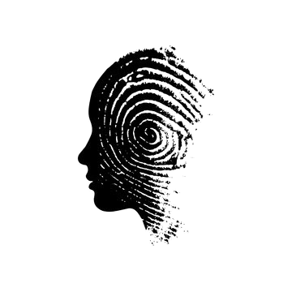
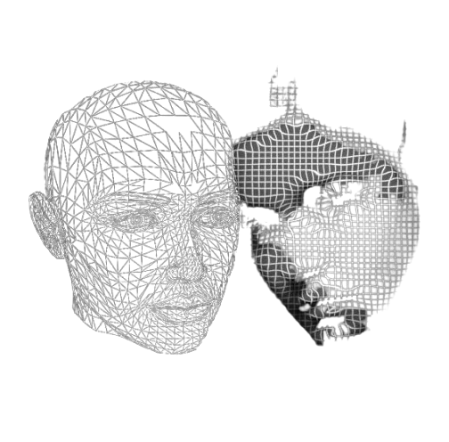

|
 |
Profilarea infractorului sau criminal profiling constă în procesul prin care caracteristicile de personalitate ale autorului unei infracțiuni sunt identificate. Se ține cont, în prealabil de analiza câmpului infracțional, tipurile variate de personalități existente, datele statistice ale faptelor similare precum și natura disfuncțiilor mentale demonstrate de autor cu ocazia comiterii faptei.
Primul „profiler” identificat este personajul lui Dupin din cartea lui Edgar Allan Poe - The Murders în the Rue Morgue, publicată în 1814. În ceea ce privește primul caz de profilare în contextul unei investigații reale, se spune că este analiza oferită voluntar de Thomas Bond, care a participat la autopsia lui Mary Jane Kelly în cazul Jack the Ripper din Anglia în 1888. |
Întrucât vinovatul nu a putut fi identificat niciodată, acuratețea profilului nu poate fi evaluată.
Prima cerere de profilare a expertizei de către oamenii legii datează din 1956, când psihiatrului american James A. Brussel i s-a cerut să ofere un profil al bombardierului nebun (George Metesky). Profilul oferit de Brussel, care s-a dovedit a fi impresionant de corect (până la hainele pe care suspectul le purta în timpul arestării sale), a contribuit în mare măsură la popularitatea ulterioară a acestei abordări. Adevăratul început al profilării a luat naștere în 1960, când FBI a început să încorporeze profilarea în practicile sale de investigație, deși Unitatea de Analiză Comportamentală (BAU) nu a fost fondată la Quantico până în 1978 (Egger, 1999). |
|
Ce face un profiler? În general serviciile de analiză comportamentală îndeplinesc următoarele sarcini: - elaborarea profilurilor infractorilor neidentificați sau a profilului celui mai posibil autor; - analiza scenei sau scenelor crimei; - reconstrucția scenei/scenelor crimei; - evaluarea indirectă a personalității; - oferă suport în investigații; - oferă asistență în executarea mandatelor de percheziție; - analize, declarații sau mărturii; - analize și suport în timpul morților suspecte; - efectuarea de interogatorii; - investigații și suport în crime de mare violență. „Profilarea criminală poate fi definită ca o tehnică care urmărește identificarea principalelor trăsături de personalitate și caracteristici comportamentale ale unui suspect, pe baza elementelor identificate la locul faptei” (Beauregard și Proulx, 2001, p. 20). Potrivit autorilor, profilarea criminală poate fi numită și profilarea psihologică, profilarea personalității, analiza anchetei penale (FBI/ICIAF) sau psihologie investigativă (D. Canter) (Copson)., 1995). Deși această definiție este adecvată pentru majoritatea activităților de profilare criminală, metodele și abordările utilizate sunt încă foarte variabile și includ, în sens larg, analize bazate pe experiență și intuiție, abordarea clinică și abordarea statistică sau actuală (Snook, Eastwood, Gendreau, Goggin & Cullen, 2007). |
 |